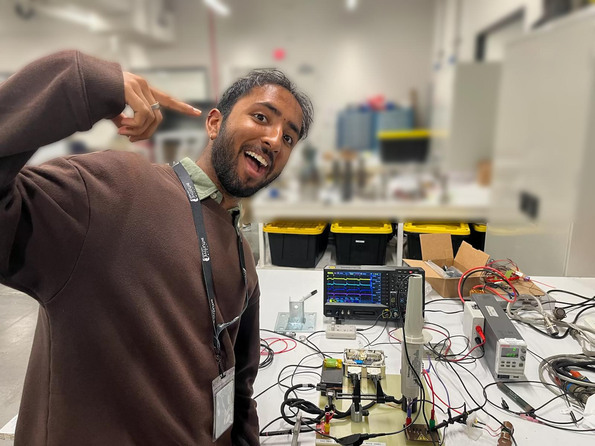
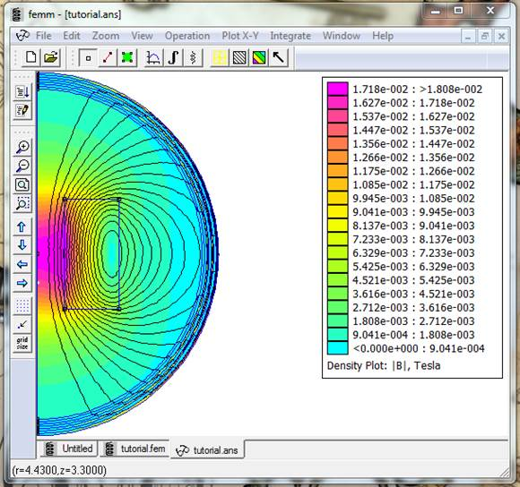

FROM NOVICE TO SUBJECT MATTER EXPERT
At the start of my internship, I had no prior experience with ignition coils. By the end, I became a subject matter expert, designing, modeling, and testing coils that the propulsion team relied on for critical systems.
My work combined analytical modeling, FEA simulations, optimization algorithms, and hands-on hardware validation to develop coils that met stringent performance, energy, and weight requirements.

Me with the ignition coil test stand — where designs were validated and optimized for performance.
BUILDING ACCURATE MAGNETIC MODELS
Initial hand calculations in Excel used textbook equations, but they overestimated energy and failed to capture non-linear core saturation. I integrated non-linear inductance approximations to better represent high-current behavior.
To achieve more realistic predictions, I employed FEMM (Finite Element Method Magnetics) to simulate flux density gradients, calculate inductance, and estimate stored energy. This modeling formed the foundation for all subsequent coil design decisions.

FEMM simulation showing magnetic flux density distribution across the coil core.
PARAMETRIC DESIGN AND PSO
Using Python scripts wrapped around FEMM, I conducted parametric studies on wire gauge, number of primary loops, and core dimensions. To navigate the non-linear design space, I implemented a Particle Swarm Optimization (PSO) algorithm, enabling rapid identification of coil configurations that balanced energy, inductance, and weight.
Designs were evaluated for core saturation, energy storage, and manufacturability. The resulting coils delivered consistent spark energy while remaining lightweight and structurally feasible.

Particle Swarm Optimization used to identify optimal coil parameters in a complex, non-linear design space.
FROM DESIGN TO SPARK
Coils were wound on CNC machines, accounting for precise primary layering to optimize flux distribution. Challenges included fitting partial layers, spacing, and avoiding core or secondary wire overheating.
Testing revealed issues with legacy hardware such as polarity flips and faulty diode ladders. Correcting these allowed verification of coil performance, and measurements closely matched FEMM predictions.
Live spark testing of optimized coils confirmed design performance and reliability.
LESSONS FROM BUILDING HIGH-PERFORMANCE COILS
- Iterative modeling + FEA + parametric studies are essential for accurate electromagnetic design.
- Optimization algorithms like PSO can navigate complex, black-box design spaces when equations fail.
- Precise manufacturing and coil layering critically impact performance and reliability.
- Test stand validation often uncovers hidden issues, highlighting the importance of thorough troubleshooting.
- Failing forward is valuable, but understanding failures ensures meaningful learning.